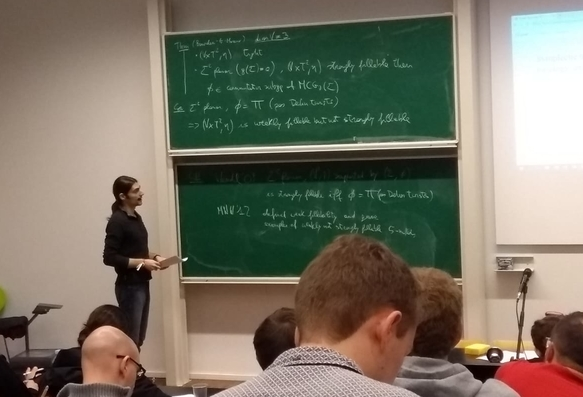

Conferences, workshop, schools:
08/2026
Workshop on Symplectic Topology, University of Belgrade
10/2025
School in symplectic and contact topology, University of Dakar
08/2025
Conformal Dynamics and Geometry in Bordeaux
, University of Bordeaux
08/2023
Workshop on Symplectic Field Theory 10
, Humboldt University, Berlin
07/2022
Topologie
, Oberwolfach, Germany. (Couldn’t participate because positive to Covid.)
02/2020
CAST 2020: XIV Workshop on Symplectic Geometry, Contact
Geometry, and Interactions, University of Antwerpen
01/2019
Workshop on Symplectic and contact mapping class groups
, Seoul National University, two talks
Seminars:
05/2026
Séminaire Nord-Bassin Parisien "Structures géométriques de la dissipation", Paris-Metz-Valenciennes-Lille-Louvain-Liège-Bruxelles (Online)
02/2026
Arbeitsgemeinschaft Symplektische Topologie, Köln University.
02/2026
Poisson geometry research seminar, Köln University.
12/2025
Berlin-Hamburg-Hannover symplectic seminare, Leibniz University, Hannover.
12/2025
Séminaire de Systèmes dynamiques, Analyse et Géométrie, Avignon Université
09/2025
Dutch Differential Topology & Geometry seminar, Vrije Universiteit Amsterdam
11/2024
Topology seminar, Alfred Renyi Institute, Budapest
05/2024
Topology and geometry seminar, Morningside Center of
Mathematics, Beijing
01/2024
Séminaire Symplectix, Institut Henri Poincaré
11/2023
Topology seminar, Universitat de Barcelona
11/2023
Differential geometry seminar, University of Minnesota,
Minneapolis
11/2022
Séminaire Topologie et Géométrie, Université de Lyon I
10/2022
Séminaire Nantes-Orsay, Université Paris-Saclay
10/2022
Séminaire Topologie, Géométrie et Algèbre, Nantes Université
07/2022
Rencontre symplectique Lyon-Grenoble, Université de Lyon I,
two talks
05/2022
Oberseminar Geometrie, Universität München
03/2022
Geometry and Topology seminar, University of Uppsala
11/2021
Symplectic Zoominar, CRM-Montréal, Princeton/IAS, Tel Aviv, and Paris
11/2021
Symplectic Geometry Seminar, Humboldt University, Berlin
09/2021
Geometry and Topology Seminar, University of Toronto Scarborough, Toronto
12/2020
Symplectic Geometry Seminar, Humboldt University, Berlin
11/2020
Floris Takens Seminar, University of Groningen, Groningen
03/2020
Topology seminar, Alfred Rényi Institute, Budapest
01/2020
UCLA Topology Seminar, UCLA, Los Angeles
11/2019
Séminaire Nantes--Orsay, Université Paris Sud, Orsay
09/2019
Monash Topology Seminar, Monash University, Clayton
07/2019
Symplectic seminar, Humboldt-Universität, Berlin
04/2019
Topology Wednesday meetings, Alfréd Rényi Institute, Budapest
12/2018
Geometry Seminar, Justus-Liebig-Universität, Gießen
12/2018
Oberseminar Differentialgeometrie, Universität Augsburg, Augsburg
09/2018
Geometry Seminar, Instituto de Ciencias Matemáticas, Madrid
03/2018
Séminaire Géométries, Université de Lyon I, Lyon
02/2018
Séminaire de Topologie, Université Grenoble Alpes, Grenoble
11/2017
Arbeitsgemeinschaft Symplektische Topologie, Universität zu Köln, Cologne
10/2017
Séminaire Géométrie Topologie Dynamique, Université Paris-Sud, Orsay
05/2017
Oberseminar Geometrie, Universität München, Munich
05/2017
Séminaire Symplectix, Institut Henri Poincaré, Paris